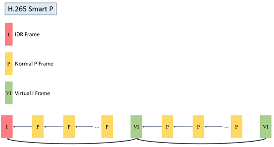

2. GOP结构和适用场景¶
2.1. GOP模式列表¶
模式 |
说明 |
|---|---|
NormalP |
P帧只向前参考前一张参考帧 |
SmartP |
P帧只向前参考前一张参考帧，VI帧向前参考IDR帧 |
2.2. NormalP模式结构说明¶
2.2.1. NormalP模式结构说明¶
NormalP（也称为 IPPP 编码）是视频编码中最基础、最常用的 GOP（Group of Pictures）结构，其帧类型排列遵循严格的 前向参考 模式
在一般无特殊需求场景下，建议使用NormalP模式
NormalP模式GOP结构，如下图所示。


2.2.2. Normal模式使用方法¶
相关接口
CVI_VENC_CreateChn
相关参数
VENC_CHN_ATTR_S::stGopAttr.enGopMode = VENC_GOPMODE_NORMALP
VENC_CHN_ATTR_S::stRcAttr.u32Gop = 60
VENC_CHN_ATTR_S::stGopAttr.stNormalP.s32IPQpDelta推荐设为3，数值越大I帧码率越大，图像质量越好
2.3. SmartP模式GOP结构说明及使用方法¶
2.3.1. SmartP模式结构说明¶
SmartP 是一种专为监控场景优化的视频编码模式，通过引入 Virtual-I帧 和 长期参考帧 机制，在保持低码率的同时减少关键帧（IDR）的强制插入频率
- 核心创新点
两种P帧融合
普通P帧：短期参考，向前参考前一帧（类似NormalP）
Virtual-I帧：长期参考，直接向前参考最近的IDR帧（跨越多帧）
通过减少IDR帧的频繁插入，避免因关键帧重建导致的画面瞬时码率波动
- 适用场景与限制
最佳场景
固定摄像头监控：如商场、停车场等背景静止、仅有局部运动的场景
低带宽传输时可显著降低整体码率
局限性
动态背景适应性差：若摄像头移动或场景全局变化（如切换灯光），Virtual-I帧效率下降
解码复杂度略高：需维护长期参考帧缓冲区
SmartP模式GOP结构，如下图所示。


2.3.2. SmartP模式使用方法¶
相关接口
CVI_VENC_CreateChn
相关参数
VENC_CHN_ATTR_S::stGopAttr.enGopMode = VENC_GOPMODE_SMARTP
VENC_CHN_ATTR_S::stGopAttr.stSmartP.u32BgInterval = 300 // 10secs for fps=30
VENC_CHN_ATTR_S::stRcAttr.u32Gop = 60 // virtual I interval，2secs for fps=30
VENC_CHN_ATTR_S::stRcAttr.u32StatTime = 10 // secs
VENC_CHN_ATTR_S:: stGopAttr.stSmartP.s32BgQpDelta = 2
VENC_CHN_ATTR_S:: stGopAttr.stSmartP.s32ViQpDelta = 0
2.4. 不同GOP结构Buffer占用情况¶
模式 |
DDR占用 |
适用场景 |
|---|---|---|
NormalP |
2*PicSize |
一般场景 |
SmartP |
3*PicSize |
监控场景 |
编码时编码器需要缓存当前待编码帧的YUV以及参考帧的YUV，对NormalP而言，其参考帧只有前面P帧，而SmartP除了缓存前面P帧的重建帧，还需要缓存长期参考帧的重建
H.264
PicSize= FrameBufSize + mvBufSize + recBufSize
H.265
PicSize= FrameBufSize + mvBufSize + recBufSize
各子项计算方法请参考文档《CV184x媒体软件开发参考》的“视频编码”章节